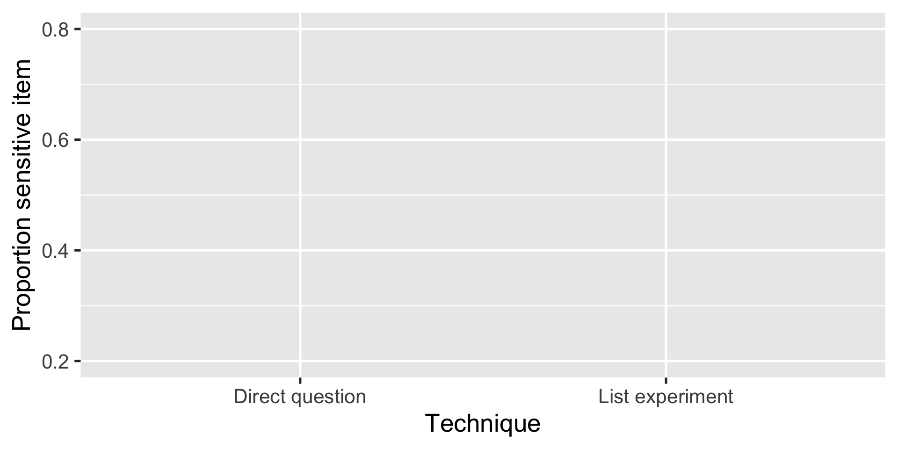
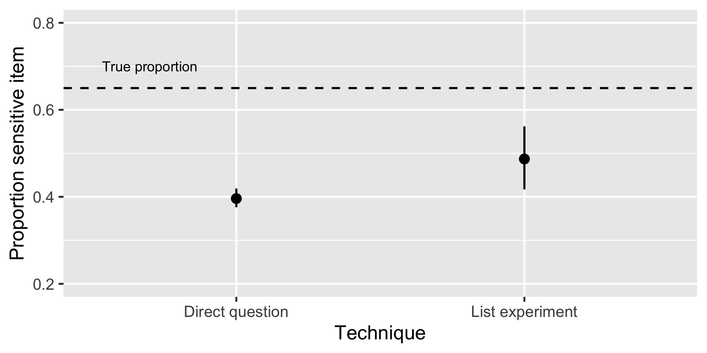
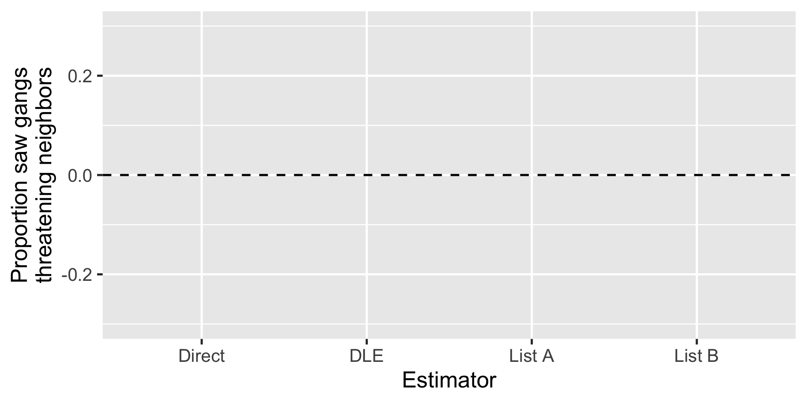
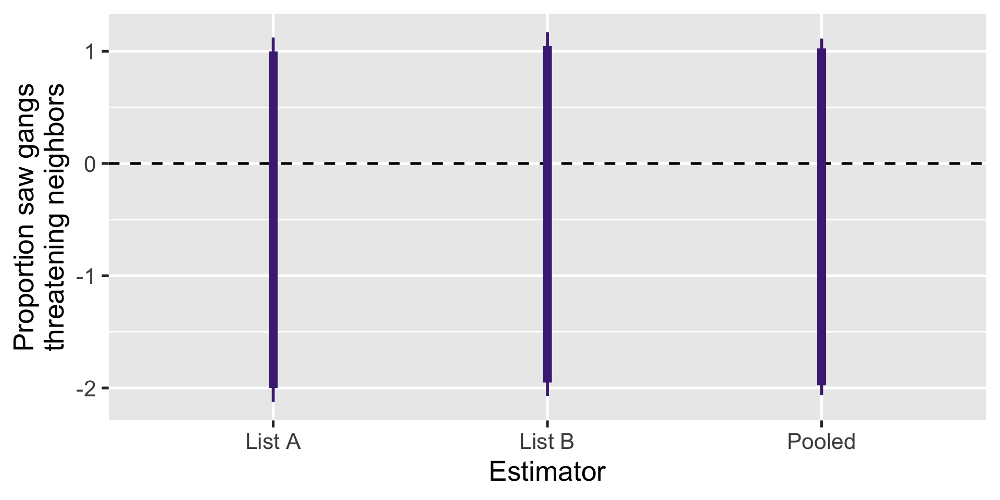

| Control | Treatment |
|---|---|
| The federal government increasing tax on gasoline | The federal government increasing tax on gasoline |
| Professional athletes getting million dollar contracts | Professional athletes getting million dollar contracts |
| Large corporations polluting the environment | Large corporations polluting the environment |
| A black family moving next door |
Recovering Informative Estimates
in Failed Placebo-Controlled
List Experiments
Gustavo Diaz
Northwestern University
gustavo.diaz@northwestern.edu
Paper and slides: gustavodiaz.org/talk

ERC Starting Grant
Criminal Governance in Unexpected Contexts: the Role of the Welfare State in Latin America
with
- Verónica Pérez Bentancur (Universidad de la República)
- Ines Fynn (Universidad Católica del Uruguay )
- Lucía Tiscornia (University College Dublin)
List experiment
Now I am going to read you things that make people angry or upset
List experiment
After I read them all, tell me HOW MANY of them upset you
List experiment
I don’t want to know which ones, just tell me HOW MANY
Control group
- The federal government increasing tax on gasoline
- Professional athletes getting million dollar contracts
- Large corporations polluting the environment
List experiment
I don’t want to know which ones, just tell me HOW MANY
Treatment group
- The federal government increasing tax on gasoline
- Professional athletes getting million dollar contracts
- Large corporations polluting the environment
List experiment
I don’t want to know which ones, just tell me HOW MANY
Treatment group
- The federal government increasing tax on gasoline
- Professional athletes getting million dollar contracts
- Large corporations polluting the environment
- A black family moving next door
Reduces sensitivity bias

Reduces sensitivity bias

Reduces sensitivity bias

Problem
Cannot see “true” proportion
How to tell if a list experiment brings you closer?
Artificial inflation
Solution: Add a placebo statement
| Control | Treatment |
|---|---|
| The federal government increasing tax on gasoline | The federal government increasing tax on gasoline |
| Professional athletes getting million dollar contracts | Professional athletes getting million dollar contracts |
| Large corporations polluting the environment | Large corporations polluting the environment |
| A black family moving next door |
Solution: Add a placebo statement
| Control | Treatment |
|---|---|
| The federal government increasing tax on gasoline | The federal government increasing tax on gasoline |
| Professional athletes getting million dollar contracts | Professional athletes getting million dollar contracts |
| Large corporations polluting the environment | Large corporations polluting the environment |
| Finding money in a jacket pocket | A black family moving next door |
Placebo-controlled list experiments
Reduce bias from non-strategic response errors
But they can backfire if you pick a bad placebo item
It happened to us!
Our experiment
Things people have experienced in the last six months:
| List A | List B |
|---|---|
| Saw people doing sports | Saw people playing soccer |
| Visited friends | Chatted with friends |
| Activities by feminist groups | Activities by LGBTQ groups |
| Went to church | Went to charity events |
Manipulations
Sensitive items:
- Saw criminal groups threatening neighbors
- Saw criminal groups evicting neighbors from their homes
- Saw criminal groups making donations to neighbors
- Saw criminal groups offering work to neighbors
Manipulations
Sensitive items:
- Saw criminal groups threatening neighbors
- Saw criminal groups evicting neighbors from their homes
- Saw criminal groups making donations to neighbors
- Saw criminal groups offering work to neighbors
Placebo item:
- I did not drink mate
Our experiment
Things people have experienced in the last six months:
| List A | List B |
|---|---|
| Saw people doing sports | Saw people playing soccer |
| Visited friends | Chatted with friends |
| Activities by feminist groups | Activities by LGBTQ groups |
| Went to church | Went to charity events |
Our experiment
Things people have experienced in the last six months:
| List A | List B |
|---|---|
| Saw people doing sports | Saw people playing soccer |
| Visited friends | Chatted with friends |
| Activities by feminist groups | Activities by LGBTQ groups |
| Went to church | Went to charity events |
| Saw criminal groups threatening neighbors |
I did not drink mate |
Our experiment
Things people have experienced in the last six months:
| List A | List B |
|---|---|
| Saw people doing sports | Saw people playing soccer |
| Visited friends | Chatted with friends |
| Activities by feminist groups | Activities by LGBTQ groups |
| Went to church | Went to charity events |
| I did not drink mate | Saw criminal groups threatening neighbors |
Results

Results

What do we do?
Imagine how responses would have looked like without including the placebo
Equivalent to assuming estimated proportion is partially identified
Produce non-parametric bounds
Sharp bounds
Main idea: Assume nothing beyond observed data and research design assumptions
Experimental design: Only control responses change
Sharp bounds: Impute minimun/maximum possible value
Not very informative

What else can we assume?
List experiment assumptions
- No liars: Rs do not endorse sensitive item when they it does not apply to them
- No design effects: Adding/removing an item does not affect how R responds to other items
Implications:
- Responses can only decrease
- …by a magnitude of one
List experiment bounds
Implications:
- Responses can only decrease
- …by a magnitude of one
Lower bound: All 5s become 4s
Upper bound: Everything decreases by one unless already 0
A bit more informative?

Can we do better?
Refinement 1
Known placebo proportion
If you know the proportion of placebo holders in the population of interest
Lower bound: All 5s become 4s (unchanged)
Upper bound: \[ (1- \delta) \times \text{Observed proportion} + \delta \times \text{List upper bound} \]
where \(\delta\) is the known placebo proportion
Refinement 2
Combine with direct questions
Combined estimator
\[ \hat \tau = \bar Y + (1- \bar Y) \times \bar V^*_{Y_i=0} \]
\(\bar Y\): Proportion “yes” to direct question
\(\bar V^*_{Y_i=0}\): LE estimate (upper/lower bound)
Takeaways
A design-based method to recover informative bounds in failed-placebo controlled experiment
Helpful to justify choice of placebo
Always ask about placebo items directly!
Caveat: This is a VERY EXTREME example